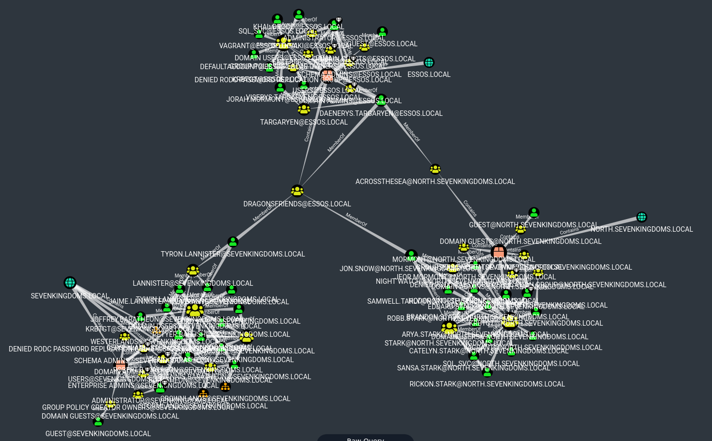
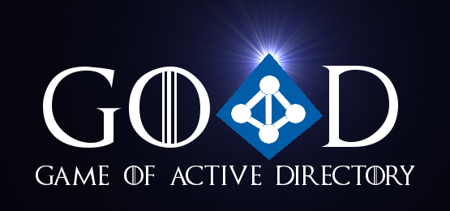
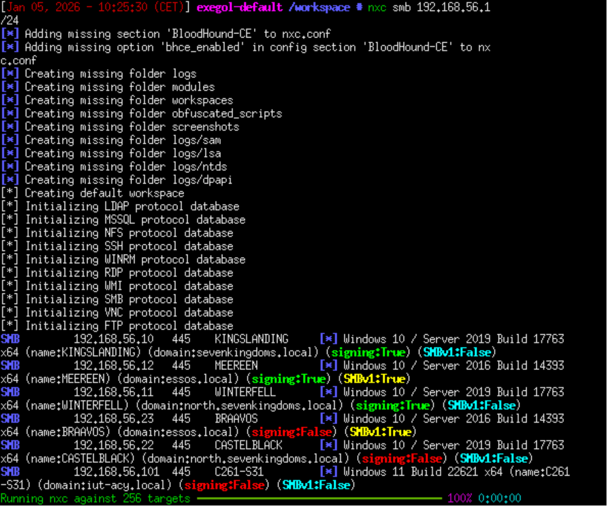
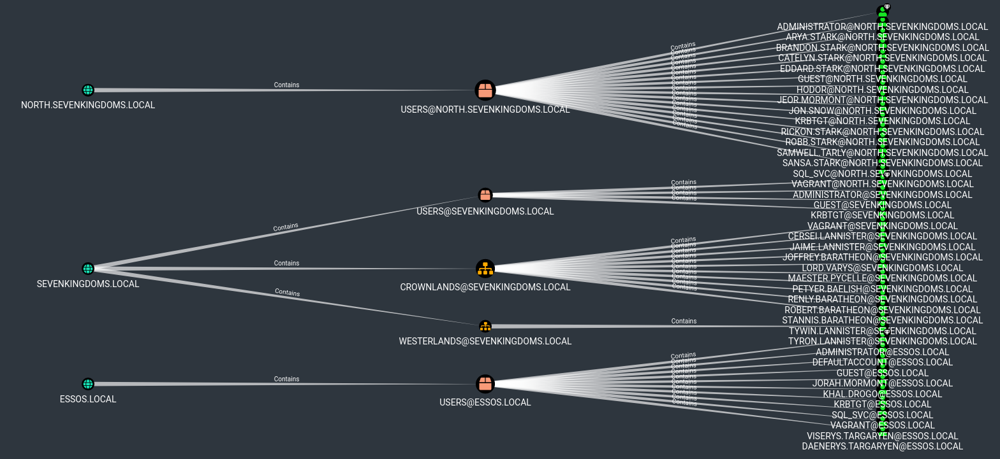

Audit de Sécurité Active Directory : Laboratoire GOAD

Présentation du projet
Ce projet, réalisé dans le cadre d'une SAÉ en 2026, consistait en un audit technique complet des trois premières parties du laboratoire GOAD (Game Of Active Directory). L'objectif était de simuler une intrusion réelle au sein d'une forêt Active Directory complexe pour identifier et exploiter des failles de configuration.
Objectifs de l'audit
- Énumération réseau : Identification des contrôleurs de domaine et des services actifs via Netexec (NXC).
- Acquisition d'identifiants : Exploitation de vulnérabilités classiques (Kerberoasting, mots de passe en clair).
- Analyse de chemins d'attaque : Cartographie complète de la forêt avec BloodHound-CE.
- Compromission de domaine : Escalade de privilèges jusqu'à l'obtention des droits "Domain Admin".
- Rédaction technique : Production d'un write-up détaillant chaque étape de l'intrusion.
Sommaire

PARTIE 1 - RECONNAISSANCE ET ÉNUMÉRATION
Méthodologie d'approche
La première étape cruciale a été l'énumération de la plage IP pour identifier les machines, leurs systèmes d'exploitation et leurs rôles au sein du domaine. À l'aide de Netexec, j'ai pu cartographier les protocoles SMB et LDAP pour détecter des sessions anonymes ou des partages mal sécurisés.
Cette phase a permis de mettre en évidence les premiers vecteurs d'entrée, notamment des comptes aux mots de passe faibles, ouvrant la voie à une phase d'acquisition d'identifiants plus agressive.
PARTIE 2 - CARTOGRAPHIE ET CHEMINS D'ATTAQUE
Visualisation avec BloodHound
L'utilisation de BloodHound-CE a été déterminante pour comprendre les relations complexes au sein de l'Active Directory. En collectant les données via un ingesteur, j'ai pu visualiser graphiquement les chemins d'attaque les plus courts vers les comptes à hauts privilèges.
- Analyse des ACLs : Identification des permissions abusives sur les objets du domaine.
- Kerberoasting : Extraction et cassage de tickets de service pour obtenir des mots de passe d'administrateurs.
- Mouvements latéraux : Utilisation des identifiants compromis pour rebondir d'une machine à l'autre.

Identification des chemins d'attaque critiques.
Conclusion Globale
Ce write-up sur l'audit du GOAD démontre que la sécurité d'un Active Directory ne tient souvent qu'à son maillon le plus faible.
Ce qui a commencé par une simple reconnaissance réseau a abouti à une compromission totale de la forêt grâce à l'enchaînement de failles mineures (mots de passe faibles, ACLs permissives).
Ce projet a renforcé ma maîtrise d'outils industriels comme Netexec et BloodHound, tout en développant ma capacité à documenter une méthodologie de test d'intrusion rigoureuse.
Il souligne l'importance vitale d'une configuration durcie et d'une surveillance constante des droits d'accès au sein des entreprises.